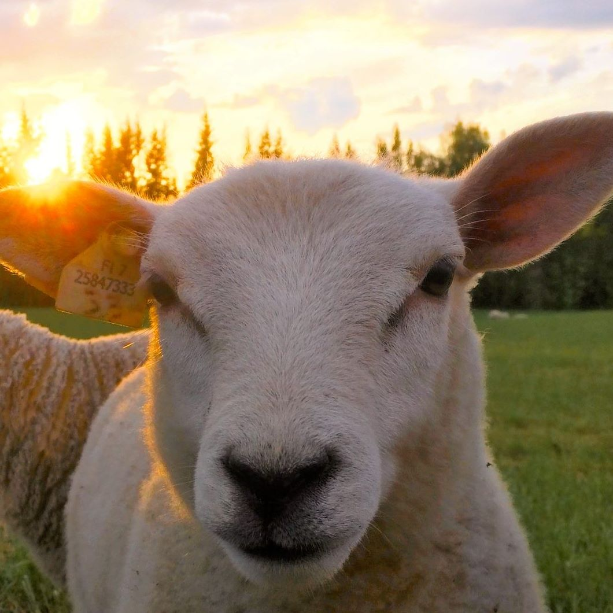
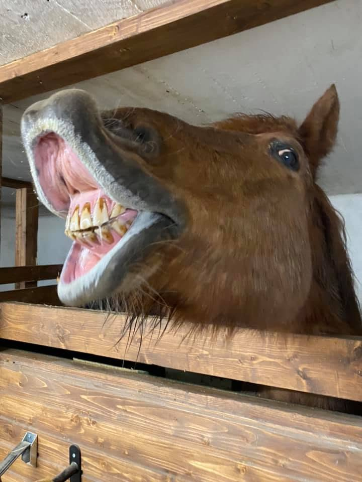
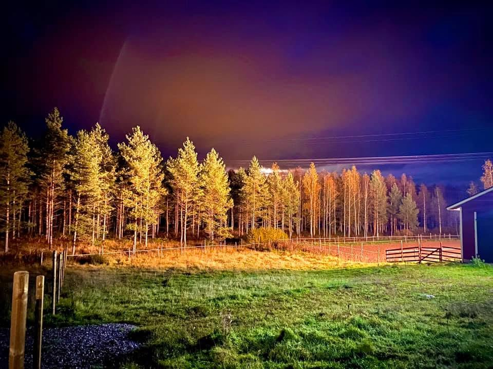
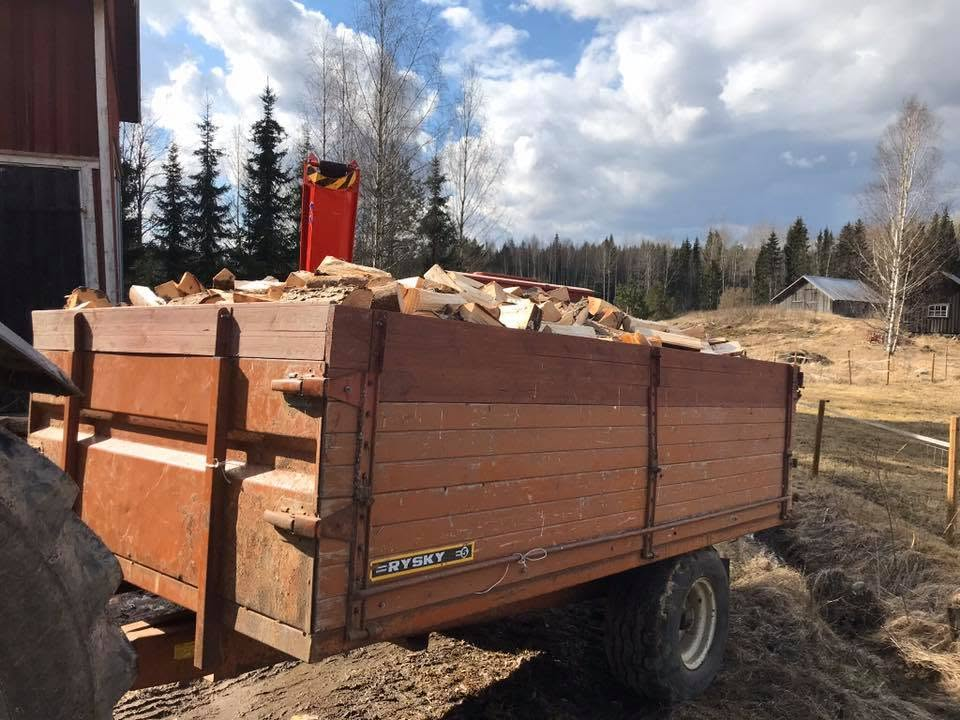

Lähes neljä vuosisataa maaseudun elämää samalla maalla Nummelassa, Vihdissä. Nästan fyra sekel av lantligt liv på samma mark i Nummela, Vichtis. Nearly four centuries of rural life on the same land in Nummela, Vihti.

Ali-Rostin tila on ollut osa Nummelan maalaismaisemaa vuodesta 1630 lähtien. Vuosisatojen ajan samalla maalla on kylvetty, korjattu satoa ja hoidettu eläimiä - hiljainen, jatkuva työ, joka jatkuu yhä tänään. Ali-Rostin tila har varit en del av landskapet i Nummela sedan 1630. I århundraden har man sått, skördat och skött djur på samma mark - ett tyst, kontinuerligt arbete som fortsätter än idag. Ali-Rostin tila has been part of the Nummela countryside since 1630. For centuries, the same land has been sown, harvested and tended to animals - a quiet, continuous labour that carries on today.
Kesäisin tilan lampaat laiduntavat avoimilla nurmilla Nummelan maalaismaisemassa. Jokainen eläin on tuttu ja huolella seurattu - pieni lauma, jota hoidetaan läheltä. Om somrarna betar gårdens får fritt på öppna ängar i Nummelas lantliga landskap. Varje djur är bekant och sköts med omsorg - en liten flock som följs på nära håll. In summer, the farm's sheep graze freely across open meadows in the Nummela countryside. Every animal is familiar and closely looked after - a small flock followed with care.
Lampaiden lisäksi tilalla asuu hevosia, joilla jokaisella on oma persoonansa. Talli on osa tilan arkea ympäri vuoden - tuttu, lämmin paikka niin eläimille kuin hoitajilleen. Utöver fåren bor det även hästar på gården, var och en med sin egen personlighet. Stallet är en del av gårdens vardag året runt - en bekant, varm plats för både djur och skötare. Alongside the sheep, the farm is also home to horses, each with a character of their own. The stable is part of everyday life on the farm all year round - a familiar, warm place for animals and caretakers alike.


Metsän reunustama laidun hämärän laskeutuessa - tuttu näky tilan mailla vuodenajasta toiseen. En skogsbryn-omgärdad hage i skymningen - en bekant syn på gårdens marker, årstid efter årstid. A forest-edged pasture as dusk settles in - a familiar sight on the farm's land, season after season.

Tilan oma metsä tarjoaa polttopuuta ja materiaalia ympäri vuoden. Käytännön työ - kaataminen, kuljetus, pilkkominen - kuuluu yhä tilan arkeen, aivan kuten sukupolvien ajan aiemminkin. Gårdens egen skog ger ved och material året om. Det praktiska arbetet - fällning, transport, klyvning - hör fortfarande till gårdens vardag, precis som under tidigare generationer. The farm's own forest provides firewood and material throughout the year. The practical work - felling, hauling, splitting - still belongs to daily life on the farm, just as it did for generations before.
Vastaamme mielellämme kysymyksiin tilasta. Ota yhteyttä puhelimitse tai sähköpostitse - kerromme lisää. Vi svarar gärna på frågor om gården. Kontakta oss per telefon eller e-post - vi berättar gärna mer. We're happy to answer questions about the farm. Reach us by phone or email - we'll gladly tell you more.